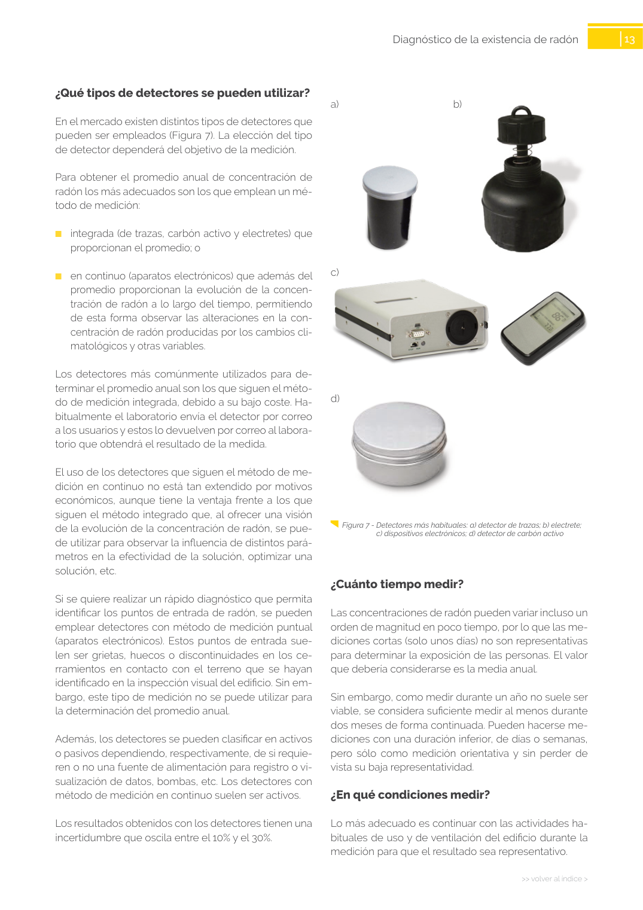

<!doctype html>
<html lang="es"><head><meta charset="utf-8">
<meta name="viewport" content="width=device-width, initial-scale=1">
<title>GUIA · p. 13 — Página 13</title><link rel="stylesheet" href="../estilo.css">
</head><body>
<nav><a href="../index.html">Índice</a> › <a href="../doc/guia-pdf-23d2f2198c3b-sin-fecha-6765d0c34c51.html">GUIA</a> › p. 13</nav>

<header class="meta">
<p><strong>GUIA</strong> · Página 13 · versión sin-fecha</p>
<p>SHA256: <code>6765d0c34c51fbe193c3ed0c1378b710f98f086d16e2b68fc28ed36e143fdaea</code> · página física 13 de 24 · métodos de encabezado
solo si están cotejados.</p>
<p><a href="../doc/guia-pdf-23d2f2198c3b-sin-fecha-6765d0c34c51.html">Documento</a> · <a href="guia-pdf-23d2f2198c3b-sin-fecha-6765d0c34c51__p0012.html">← p. 12</a> · <a href="guia-pdf-23d2f2198c3b-sin-fecha-6765d0c34c51__p0014.html">p. 14 →</a></p>
<p>Formatos: <a href="../../contenido/docs/GUIA-PDF-23d2f2198c3b/sin-fecha__6765d0c34c51/pagina/p0013.md">Markdown</a> · <a href="../../contenido/docs/GUIA-PDF-23d2f2198c3b/sin-fecha__6765d0c34c51/bloque/p0013.json">JSON de bloques</a> · <a href="../../contenido/docs/GUIA-PDF-23d2f2198c3b/sin-fecha__6765d0c34c51/fuente.pdf#page=13">PDF p. 13</a> · <a href="../../contenido/docs/GUIA-PDF-23d2f2198c3b/sin-fecha__6765d0c34c51/figura/p0013.png">imagen PNG</a></p>
</header>
<nav class="paginas"><a href="../doc/guia-pdf-23d2f2198c3b-sin-fecha-6765d0c34c51.html">Documento</a> <a href="guia-pdf-23d2f2198c3b-sin-fecha-6765d0c34c51__p0012.html">← p. 12</a> <a href="guia-pdf-23d2f2198c3b-sin-fecha-6765d0c34c51__p0014.html">p. 14 →</a></nav>
<h2>Encabezado de la página</h2><ul><li>Sin encabezado de fuente cotejada en esta página.</li></ul>

<pre class="literal">13
&gt;&gt; volver al índice &gt;
Diagnóstico de la existencia de radón
¿Qué tipos de detectores se pueden utilizar?
En el mercado existen distintos tipos de detectores que 
pueden ser empleados (Figura 7). La elección del tipo 
de detector dependerá del objetivo de la medición. 
Para obtener el promedio anual de concentración de 
radón los más adecuados son los que emplean un mé­
todo de medición:
	
■
integrada (de trazas, carbón activo y electretes) que 
proporcionan el promedio; o
	
■
en continuo (aparatos electrónicos) que además del 
promedio proporcionan la evolución de la concen­
tración de radón a lo largo del tiempo, permitiendo 
de esta forma observar las alteraciones en la con­
centración de radón producidas por los cambios cli­
matológicos y otras variables.
Los detectores más comúnmente utilizados para de­
terminar el promedio anual son los que siguen el méto­
do de medición integrada, debido a su bajo coste. Ha­
bitualmente el laboratorio envía el detector por correo 
a los usuarios y estos lo devuelven por correo al labora­
torio que obtendrá el resultado de la medida.
El uso de los detectores que siguen el método de me­
dición en continuo no está tan extendido por motivos 
económicos, aunque tiene la ventaja frente a los que 
siguen el método integrado que, al ofrecer una visión 
de la evolución de la concentración de radón, se pue­
de utilizar para observar la influencia de distintos pará­
metros en la efectividad de la solución, optimizar una 
solución, etc.
Si se quiere realizar un rápido diagnóstico que permita 
identificar los puntos de entrada de radón, se pueden 
emplear detectores con método de medición puntual 
(aparatos electrónicos). Estos puntos de entrada sue­
len ser grietas, huecos o discontinuidades en los ce­
rramientos en contacto con el terreno que se hayan 
identificado en la inspección visual del edificio. Sin em­
bargo, este tipo de medición no se puede utilizar para 
la determinación del promedio anual.
Además, los detectores se pueden clasificar en activos 
o pasivos dependiendo, respectivamente, de si requie­
ren o no una fuente de alimentación para registro o vi­
sualización de datos, bombas, etc. Los detectores con 
método de medición en continuo suelen ser activos.
Los resultados obtenidos con los detectores tienen una 
incertidumbre que oscila entre el 10% y el 30%.
  Figura 7 - Detectores más habituales: a) detector de trazas; b) electrete;
c) dispositivos electrónicos; d) detector de carbón activo
b) 
a)
c) 
d)
¿Cuánto tiempo medir?
Las concentraciones de radón pueden variar incluso un 
orden de magnitud en poco tiempo, por lo que las me­
diciones cortas (solo unos días) no son representativas 
para determinar la exposición de las personas. El valor 
que debería considerarse es la media anual.
Sin embargo, como medir durante un año no suele ser 
viable, se considera suficiente medir al menos durante 
dos meses de forma continuada. Pueden hacerse me­
diciones con una duración inferior, de días o semanas, 
pero sólo como medición orientativa y sin perder de 
vista su baja representatividad.
¿En qué condiciones medir?
Lo más adecuado es continuar con las actividades ha­
bituales de uso y de ventilación del edificio durante la 
medición para que el resultado sea representativo.
</pre>
<figure><a href="../../contenido/docs/GUIA-PDF-23d2f2198c3b/sin-fecha__6765d0c34c51/figura/p0013.png"></a><figcaption>Imagen de la página 13 (PNG ya extraído; prevalece sobre fórmulas).</figcaption></figure>
<h2>Tablas candidatas de esta página</h2><ul><li><a href="../../contenido/docs/GUIA-PDF-23d2f2198c3b/sin-fecha__6765d0c34c51/tabla/p0013_t01.json">p0013_t01.json</a> · <a href="../../contenido/docs/GUIA-PDF-23d2f2198c3b/sin-fecha__6765d0c34c51/tabla/p0013_t01.csv">.csv</a> (1 × 2; candidata, no reconstruida aquí)</li></ul>
<h2>Referencias, notas y excepciones (página y vecinas)</h2><ul><li><a href="../apartado/guia-pdf-23d2f2198c3b-sin-fecha-6765d0c34c51__a0042.html">ID a0042 · ¿Cómo interpretar los resultados obtenidos?</a></li></ul>
<h2>Apartados que incluyen esta página</h2><ul><li><a href="../apartado/guia-pdf-23d2f2198c3b-sin-fecha-6765d0c34c51__a0036.html">ID a0036 · Capítulo</a></li><li><a href="../apartado/guia-pdf-23d2f2198c3b-sin-fecha-6765d0c34c51__a0037.html">ID a0037 · ¿Qué tipos de detectores se pueden utilizar?</a></li><li><a href="../apartado/guia-pdf-23d2f2198c3b-sin-fecha-6765d0c34c51__a0038.html">ID a0038 · ¿Cuánto tiempo medir?</a></li><li><a href="../apartado/guia-pdf-23d2f2198c3b-sin-fecha-6765d0c34c51__a0039.html">ID a0039 · ¿En qué condiciones medir?</a></li></ul>

<footer>Generado estáticamente desde JSON normalizado; sin JavaScript ni servicios externos.
El JSON es la fuente; este HTML es caché reproducible.</footer>
</body></html>
